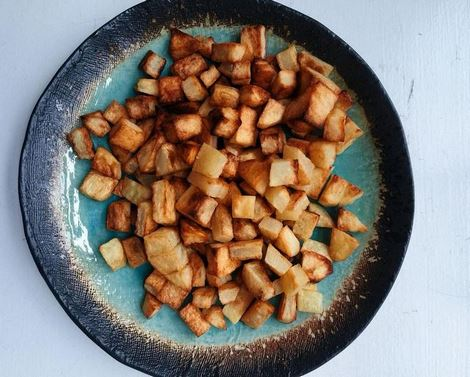

Papas bravas recipe

Description
In this recipe you will learn a form of cooking potatos that is very tasty, easy to do and low in calories
Ingredients
- potatos
- sunflower oil
- assorted spices (oregano, paprika, garlic powder, black pepper, white pepper, chili,)
- salt
Steps
- firts, clean the potatos, you can peel them or do it with the skin
- cut the potatos in cubes about 1x1 cm each
- Put them in a bowl, add a jet of oil
- Add spices to taste
- Shake the bowl to integrate all the spices and the oil
- Put the potatos in a plaque into the oven at 200°C
- Cook for 45 minutes, put them into a new bowl, salt the fries and let them cool
- Enjoy!